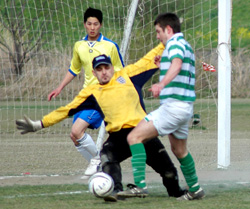
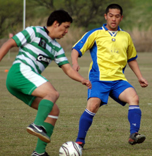

|
Misato, Sun 9th April. The Celts Div 2 title challenge came to a disappointing end at windy Misato, when they were held to a 1-1 draw by the Clash.
Despite missing 6 regular first team players the Celts started well, passing the ball around nicely, with chances being created for Oli and Neil up front. The back four were pretty solid, the only difficulty being the strong wind making it hard to judge how far the ball was going to carry.
After a good passing move involving Dermot, Damo and Oli, Oli's shot was saved well but the keeper could only watch as Neill was on hand to knock home the rebound from 4 yards.
Up to half time was pretty even with young Dorian up front causing some problems with his off the ball running and Sid being a nuisance (not in the footballing sense). Aki saved well from the one shot he had to deal with, and tipped over a corner that was curling towards the net.
Half time 1-0 and the Celts had their final team talk from Eugene "jinky" Beattie on his farewell appearance for the Celts. We'll miss those teamtalks!! Thanks for the years of service and best of luck for the future Eugene.
The second half started poorly for the Celts, leaking a soft goal 5 minutes into the half. A bad pass from defence was intercepted, and Dorian latched onto a through ball to lob Aki with his apparently weaker foot. The Celts looked to push on and get the winner, leaving gaps at the back, their tactical options limited by 2 injuries and the fact that 3 guys that said they were turning up didnt show. In the end the winner was beyond them, With Gav coming closest to the winner when his header was saved.
In the end a good season, promotion secured and unbeaten since early September. Well done to the Jets on their winning the league and promotion (although not confirmed Shane need to beat the Jets by 9 goals for the Celts to finish top)
Thanks also to the Shane lads for their kind wishes for our injured players.
Look forward to Div 1, confident that with the addition of a couple of players the Celts can do well.
Man of the Match: Libor from Clash.
Match reporter: Ruairi Hatchell
|